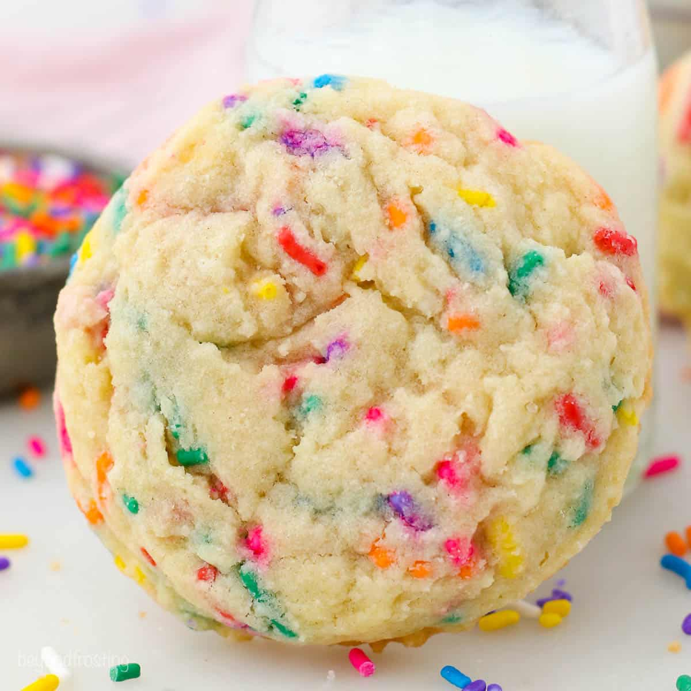

Sprinkle Cookies
Source: “Easy Sprinkle Cookies” from isabeleats.com
Yield: 2 ½ dozen cookies
Ingredients
- 1 cup unsalted butter, softened
- 1 cup granulated sugar
- 1 large egg
- 2 tsp vanilla extract
- 3 cups all-purpose flour
- ⅓ cup nonpareils sprinkles
Instructions
- Preheat oven to 350F. Line two large baking sheets with parchment paper and pour the sprinkles in a small bowl. Set aside.
- In a large mixing bowl, add butter and sugar. Beat with a hand mixer or a stand mixer fitted with a paddle attachment until creamed together, about 1 minute.
- Add egg and vanilla extract. Beat for 30 seconds to combine.
- Add flour one cup at a time and mix on low until well combined before adding in the next cup of flour.
- Scoop and roll the dough into 18 balls (about 2 tablespoons per ball), and place them on the prepared baking sheets.
- Roll each ball in the sprinkles, pressing down firmly to get them to stick to the outside as much as possible. Transfer to prepared baking sheets.
- Flatten the cookies by gently pressing down on the tops with a flat surface until they’re about ¼ in thick.
- Bake for 15-20 minutes, until the bottoms of the cookies are light to golden brown.
- Let the cookies cool on the baking sheet for 5 minutes before transferring to a wire rack to cool completely.